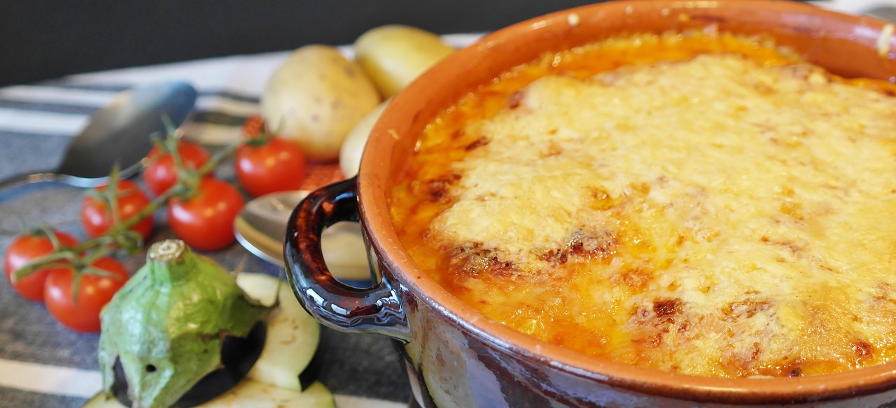

Tortellinigratin mit Tomaten-Sahnesoße

40 min.
Simpel
01.08.2022
Zutaten für
| 1 | Knoblauchzehe(n) |
| 1 | Zwiebel(n) |
| 2 | Paprikaschote(n) |
| 1 Dose | Mais |
| 1 Dose | Tomaten in stücken |
| 200 g | Schalgsahne |
| 100 g | Rotes Pesto |
| 800 g | Tortellini |
| 125 g | Mozarelle |
| / | Salz Pfeffer |
| 1 EL | Olivenöl |
Zubereitung
ca. 20 min Arbeitszeit
20 min Backzeit
Gesamtdauer 40 min.
Die Zwiebel und die Knoblauchzehe schälen. Die Paprikaschote entkernen und waschen. Alles fein würfeln. Den Mais abtropfen lassen. Das Öl in einem Topf erhitzen, die Zwiebel- und die Knoblauchwürfel darin andünsten. Die Tomaten, Sahne und Pesto zufügen, alles fein pürieren. Die Soße aufkochen und mit Salz und Pfeffer abschmecken. Die Tortellini, Mais und Paprikawürfel mischen und in eine Auflaufform geben, die Soße darübergießen. Den Mozzarella in Scheiben schneiden und den Auflauf damit belegen. Den Auflauf im vorgeheizten Backofen bei 200 °C ca. 20 Min. backen.
Rezept erstellt von

Manu